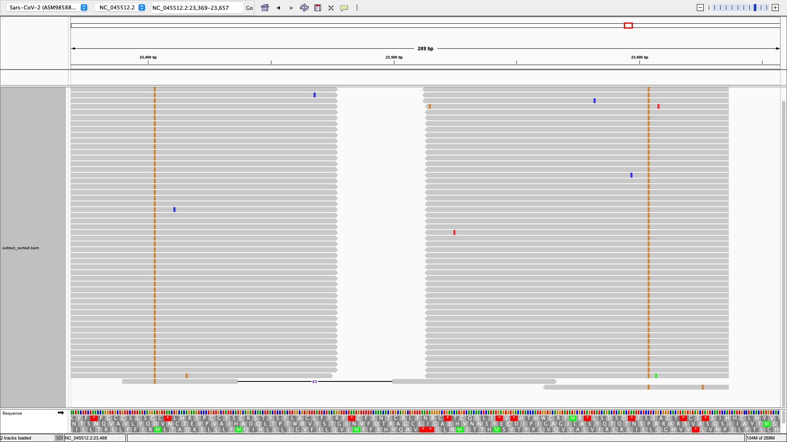

Read Analysis Tutorial
For this tutorial, we’ll begin with the same aligned, trimmed, and sorted BAM file, test.bam used in the Command Line Workflow tutorial, along with the corresponding SARS-Cov-2 reference genome.
Let’s start off by finding covariant mutations (i.e. mutations present on the same sequenced read) on the spike gene. We can do so using the command:
freyja covariants freyja/data/test.bam 21563 25384 --output covariants_output.tsv --gff-file freyja/data/NC_045512_Hu-1.gff
This saves covariance information to covariants_output.tsv, including the mutations present, their absolute count and frequency, as well as the genomic ranges covered by reads containing said mutations. To get a better sense of the data, we can generate a heatmap plot via:
freyja plot-covariants covariants_output.tsv --output covariants_heatmap.png
As we can see, there appear to be a number of mutations that occur
together in this sample, such as S:D614G and S:P681R. We can pull these
reads from test.bam using freyja extract. First, we must specify the
mutations by creating a csv file, and then listing the corresponding
nucleotide mutations, which are listed in covariants_output.tsv.:
A23403G,C23604G
We can now run freyja extract, passing in our query.csv file
alongside test.bam. We’ll include the –same_read flag since we’re only
interested in reads where both mutations are present
freyja extract query.csv freyja/data/test.bam --same_read --output extracted.bam
Finally, we can view the pulled reads via IGV. First, we’ll need to sort
and index extracted.bam:
samtools sort extracted.bam > extracted_sorted.bam
samtools index extracted_sorted.bam
Now load extracted_sorted.bam into IGV! 
In some cases, it can be useful to remove reads containing one or more
mutations. For instance, we might be interested in reads containing
S:D614G but not S:P681R. We can do this by first calling
freyja extract to select reads containing S:D614G, and then using
freyja filter on the extraced output to filter out reads containing
S:P681R.
Extract S:D614G reads:
extract_query.csv:
A23403G
freyja extract extract_query.csv freyja/data/test.bam --output S_D614G_extracted.bam
samtools sort S_D614G_extracted.bam > S_D614G_extracted_sorted.bam
samtools index S_D614G_extracted_sorted.bam
Filter S:P681R reads from
S_D614G_extracted.bam
filter_query.csv:
C23604G
freyja filter filter_query.csv freyja/data/test.bam --output S_D614G_filtered.bam
The resulting S_D614G_filtered.bam should only contain reads containing S:D614G (which in this case happen to be unpaired reads with no coverage at S:P681).